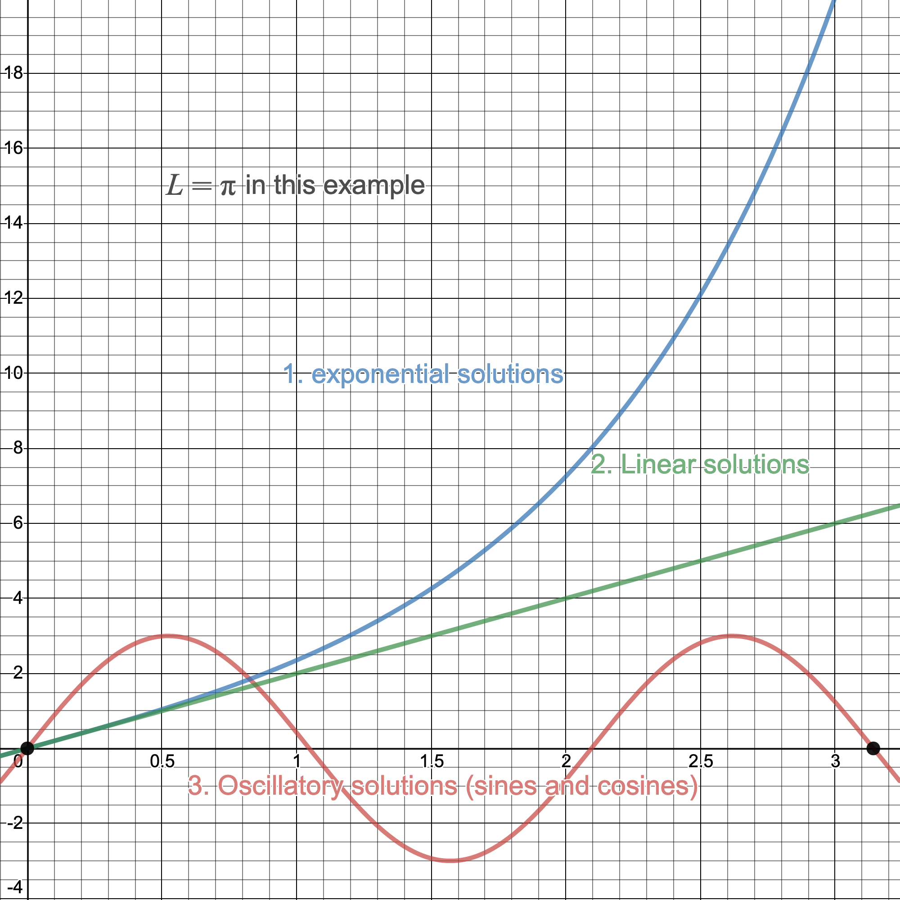

Advanced Calculus L7
- The 1D heat equation
- The method of separation of variables
- Examples
The 1d Heat Equation

- Plus BCs: ends of rod held constant at zero degrees, i.e.
\[
u(0,t) = u(L,t) = 0
\]
- And IC giving the initial temperature distribution: $u(x,0)=f(x)$
Advanced Calculus L7
- The 1D heat equation
- The method of separation of variables
- Examples
Method of Separation of Variables
The trick is to assume that your solution takes the separable form
\[
\color{#FF33F9}{\boxed{\color{white}
u(x,t) = F(x)G(t)
}}
\]
Substituting this into the PDE gives
\[
\begin{align*}
\frac{\partial u}{\partial t} &= F(x)G'(t) \\
\frac{\partial^2 u}{\partial x^2} &= F(x)''G(t)
\end{align*}\implies F(x)G'(t) = \kappa F''(x)G(t)
\]
Now
\[
F(x)G'(t) = \kappa F''(x)G(t) \implies
\begin{align*}
\frac{G'(t)}{\kappa G(t)} &=\frac{F''(x)}{F(x)}\\
&= \lambda ~\text{ a constant}
\end{align*}
\]
This follows since the LHS is a function of $t$ only and the RHS a function of $x$ only.
Multiplying by the denominators and rearranging gives
\[
\color{red}{\boxed{\color{white}
\begin{cases}
F''-\lambda F = 0 & F(0)=F(L)=0\\
G'-\kappa\lambda G = 0&
\end{cases}
}}
\]
Where do the new BCs come from?
It follows that in order to solve for $u(x,t)$ we need to solve the ODEs for $F$ and $G$.
Let's start with the $F$-equation:
\[
F''-\lambda F = 0\quad F(0)=F(L)=0
\]
This is a BVP and we have seen previously that we require $\lambda=-\omega^2<0$ to obtain non-trivial solutions, i.e.
\[
F'' +\omega^2 F=0,
\]
which has solution
\[
F(x) = A\cos(\omega x)+B\sin(\omega x)
\]

Applying the BCs
\[
F(0) = A\cos(\omega 0)+B\sin(\omega 0) = 0 \implies A=0
\]
So that $F(x) = B\sin(\omega x)$
The second BC gives
\[
F(L) = B\sin(\omega L)=0 \implies \omega L = n\pi, n=1,2,3,\ldots
\]
Or
\[
\omega_n = \frac{n\pi}{L}, n=1,2,\ldots \implies
\color{green}{\boxed{\color{white}F_n(x) = B_n\sin\left(\frac{n\pi}{L} x\right)}}
\]
Now for the $G$-equation
\[
G'-\kappa\lambda G = 0 \quad\text{or}\quad \color{red}{\boxed{\color{white} G'+\kappa\frac{n^2\pi^2}{L^2}G=0}}
\]
since
\[
\lambda = -\omega^2=-\frac{n^2\pi^2}{L^2}
\]
We can solve to obtain
\[
\color{yellow}{\boxed{\color{white}
G_n(t) = C_ne^{-\kappa\frac{n^2\pi^2}{L^2}t}
}}
\]
Putting this altogether we get...
... a family of solutions
\[
u_n(x,t) = D_ne^{-\kappa\frac{n^2\pi^2}{L^2}t}\sin\left(\frac{n\pi}{L}x\right) \quad(D_n = B_nC_n)\
\]
Now, since the PDE is linear and homogeneous we can sum these solutions to obtain a general solution, i.e.
\[
\color{green}{\boxed{\color{white}
\begin{align*}
u(x,t) &=\sum_{n=1}^\infty u_n(x,t)\\
&=\sum_{n=1}^\infty D_ne^{-\kappa\frac{n^2\pi^2}{L^2}t}\sin\left(\frac{n\pi}{L}x\right)
\end{align*} }}
\]
We shall see how to incorporate the IC in the example to follow
Advanced Calculus L7
- The 1D heat equation
- The method of separation of variables
- Examples
Example 7.1 Find the solution to the IBVP
\[
\frac{\partial u}{\partial t} = 4\frac{\partial^2u}{\partial x^2}, \quad x\in(0,\pi), ~ t>0
\]
with BCs \[u(0,t)=u(\pi,t)=0\] and IC
\[
u(x,0) = \sin(x)+\frac{1}{2}\sin(2x)=f(x), x\in(0,\pi)
\]
Solution
Assuming a separable solution $u(x,t) = F(x) G(t)$ we can derive a pair of ODEs for $F,G$:
\[
\begin{cases}
F''-\lambda F = 0 & F(0)=F(\pi)=0\\
G'-4\lambda G = 0&
\end{cases}
\]
Since we have zero BCs we know that the $F$-equation should admit oscillatory solutions implying that
\[
\lambda = -\omega^2<0
\]
$F$-equation: We can solve $F''+\omega^2 F=0$ to obtain
\[
F(x) = A\cos(\omega x)+B\sin(\omega x)
\]
Incorporating the BCs gives
\[
F(0) = A = 0 ~~\text{and}~~ F(\pi) = B\sin(\omega\pi) = 0
\]
The second equation implies that $\omega\pi=n\pi$ or that $\omega=n$ giving
\[
F_n(x) = B_n\sin(nx), \quad n=1,2,\ldots
\]
$G$-equation: Since $\lambda = -\omega^2 = -n^2$ this equation becomes
\[
G' +4n^2 G = 0
\]
This is a first-order separable ODE with solution
\[
G(t) = C_ne^{-4n^2t},\quad n=1,2,\ldots
\]
Putting this altogether gives
\[
u_n(x,t) = D_ne^{-4n^2t}\sin(nx), \quad n=1,2,\ldots
\]
Since our PDE is linear and homogeneous we sum to get
\[
u(x,t) = \sum_{n=1}^\infty D_ne^{-4n^2t}\sin(nx)
\]
To determine the coefficients $D_n$ we incorporate the IC:
\[
u(x,0) = \sum_{n=1}^\infty D_n\sin(nx) = \sin(x)+\frac{1}{2}\sin(2x)
\]
which implies that $D_1=1, D_2=1/2$ and $D_n=0$ otherwise.
Thus
\[
\color{red}{\boxed{\color{white}
u(x,t) = e^{-4t}\sin(x)+\frac{1}{2}e^{-16t}\sin(2x)
}}
\]
Lecture 7 Review
- In this lecture we covered
- the 1D heat equation
- the method of separation of variables
- After this lecture you should
- have knowledge of the 1D heat equation and in paticular its use in modelling real-world phenomena
- be able to solve the 1D heat equation for 'special' initial conditions using the technique of separation of variables